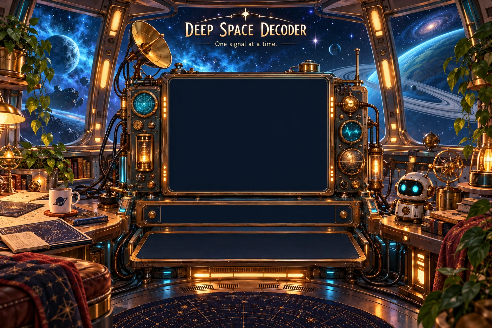
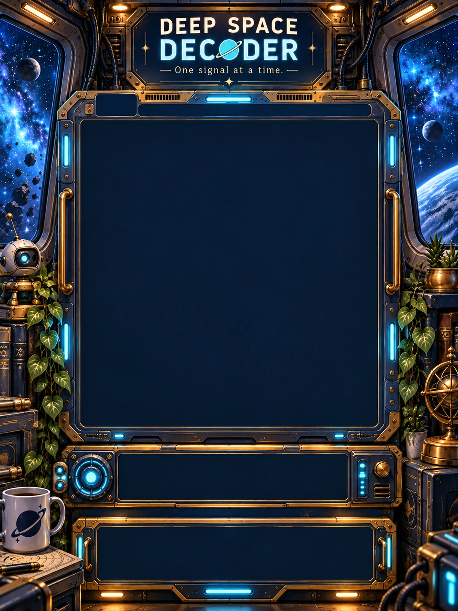

Numbers give the lengths of filled groups in each row and column, in order. Leave at least one empty square between groups. 2 1 means two filled squares, a gap, then one filled square. 0 means an empty line.
Choose Receive or Mark X, then tap a square. Tap again to clear it. Right-click marks X. Arrow keys move; Space applies your tool. L and X select tools.
Some pictures have fixed starting pixels, marked with a small diamond. Every puzzle has one solution and can be solved by deduction from its clues and starting pixels. Hint reveals one square and can be undone.
Gold or cyan clues match your current groups. Complete all 20 lines to reveal the picture. Empty squares may remain unmarked.
Explore 36 pictures in six chapters. All are available from the collection button. Your progress saves separately for each game. Compact and Desktop keep the same puzzle as you switch.
36 pictures · 6 chapters · Pick any puzzle. Completed pictures stay in your collection.
DEEP SPACE DECODER · GRAND IMAGE
Every puzzle reveals its own piece. Solve them in any order. Your pieces stay collected when you replay.